Dress Up reports · ^du_report(11) · 2026-10-18 · work in progress · about Messed Up Dress Up, a game made with M and N · after ^du_report(10)
A cast of friends
How are new costumes made, and could the friend's own design system make the whole cast of an adventure game like Hugo, Hero's Quest (Quest for Glory), King's Quest or Monkey Island: its kings and guards, wizards and witches, trolls and pirates, standing, walking and talking in its places?
- Most of a cast can be made today. 27 people of such games, by place (a castle, a village, magic folk, the wilds, the sea and its pirates, a haunted house), each made with the friend's own settings and nothing else: 4 need nothing more (The witch, A ghost, The wolf, The diver); the rest lack a piece or two, and the same few pieces again and again.
- Three pieces would finish most of them: something held (8 of 27: a staff, a sceptre, a hammer), a hat or a crown (8), and a beard (5).
- People can stand in places now, by hand: the king's room with the king and queen sat on their thrones and two guards, and the beach with its pirates, were made in the game, each person drawn where they stand and sorted among the place's things. What is missing is a person as a thing of the place, so a kid can put one there.
- On the black laptop, standing people are nearly free and walking ones are not: a person walking is drawn again every frame (1.7 to 2.8 ms on the Ubuntu laptop, 6 to 10 ms on the slow tier), so one at a time, unless their walk is drawn once and shown in turn.
- A costume today is code in several places; as one record each (its clothes, head, back, what it holds), the next costume costs its drawings and little else.
How a costume is made today
The 🎭 Costume tab offers 20 kinds. Fifteen are animals, each one row of a table (ANIMALS, js/06-costumes.js), drawn by shared code: a hood with the animal's ears and face, fur or feathers in a pattern, paws or hooves, a tail; thirteen of them are whole suits, and the falcon and the bald eagle a hood, wings and a tail worn over the clothes. The other five, the witch, the fairy, the ghost and the two diving suits, are each written into the friend's drawing (drawNow, js/18-drawing.js) case by case. Gear (a snorkel, a mask, an air tank, and their leaking bubbles) goes with any of them but the old diving suit. Ticket ^ticket(288) added the diving suits as 0.0.260 and 0.0.261; ticket ^ticket(371) fixed their tank and hose in 0.0.303.
| costume | first in | commits | its own lines today | what it does |
|---|---|---|---|---|
| 🐯 tiger | 0.0.1 | 7 | 6 (and 82 of stripes) | suit, hood, tail, paws |
| 🐈⬛ black cat | 0.0.1 | 6 | 7 | suit, hood, tail, paws |
| 🦁 lion | 0.0.1 | 6 | 15 | suit, hood and mane, tail, paws |
| 🐻 bear | 0.0.1 | 1 | 5 | suit, hood, tail, paws |
| 🦅 peregrine falcon | 0.0.1 | 9 | 16 | hood, wings and tail over the clothes |
| 🦝 raccoon | 0.0.1 | 4 | 11 | suit, hood and mask, ringed tail, paws |
| 🐈 bobcat | 0.0.1 | 5 | 8 | suit, hood with tufts, tail, paws |
| 🐆 leopard | 0.0.1 | 6 | 5 | suit, hood, tail, paws, rosettes |
| 🦅 bald eagle | 0.0.1 | 8 | 14 | hood, wings and tail over the clothes |
| 🐆 cheetah | 0.0.1 | 3 | 4 | suit, hood, tail, paws |
| 🐈⬛ black jaguar | 0.0.1 | 3 | 2 | suit, hood, tail, paws |
| 🦅 falcon suit | 0.0.1 | 4 | 3 (and ~50 shared by both bird suits) | feathers, hood, arm wings for hands, talons, tail |
| 🦅 bald eagle suit | 0.0.1 | 4 | 4 | feathers, hood, arm wings for hands, talons, tail |
| 🐺 wolf | 0.0.1 | 1 | 9 | suit, hood, bushy tail, paws |
| 🦌 deer | 0.0.1 | 4 | 33 | suit, hood and antlers, tail, hooves |
| 🧙 witch | 0.0.1 | 13 | 165 | long dress, hat over tucked hair, boots, a broom held, a cat on the shoulder |
| 🧚 fairy | 0.0.29 | 12 | 245 | tunic, wings on the back, shoes, a wreath |
| 👻 ghost | 0.0.33 | 2 | 72 | a sheet in place of the whole friend |
| 🤿 scuba suit | 0.0.260 | 3 | 29 | suit, fins |
| ⚓ old diving suit | 0.0.260 | 3 | 74 | suit, helmet, boots, a hose to the surface |
| 🥽 gear: snorkel, mask, tank, leaks | 0.0.260 | 1-3 each | 17 + 18 + 36 + 57 | worn with any kind but the old diving suit |
Counted by a helper reading the code and its history (its scripts: drivers/costumes-count.py, drivers/costumes-shared.py). Commits: those whose changed lines name the kind (its id, its own helpers or settings), the costume list itself and the split of the code into parts left out; a lower bound, since 35 more commits changed the shared animal code (hoods, tails, wings, fur) without naming a kind. Its own lines today: read by hand, comments included, only the lines that exist for that kind alone; the animals share about 380 lines of hood, fur, tail and wing code. Each animal's first version is 0.0.1: they were made on 10-09 to 10-11, before the game's versions were numbered.
What a new one touches today
- Its name in the 🎭 Costume tab's list of kinds (js/20-controls.js:273).
- A row in the tab for each of its settings (js/20-controls.js:280), and for each a rule saying when it shows, each repeating the kind's test (SHOWN_WHEN, js/20-controls.js:871: 56 such rules for costumes, 13 for the witch alone).
- A default for each setting (DEFAULTS.costume, js/01-state.js:515; 57 keys in one flat list).
- Its drawings, as functions returning SVG in the face's or the body's units (js/06-costumes.js; the diving suits' helmet, corselet, hose, mask, snorkel, tank).
- A shoe, if it has its own feet (shoeSvg, js/08-body.js:245; and how far that foot reaches, FOOT_REACH, which the fins still lack).
- In the friend's drawing (drawNow), 13 separate edits for the diving suits: a flag for the kind; what replaces the shirt and pants; the underwear guard (which lists five kinds); the feet's seven-way choice; each piece put in at its depth (the back, the legs, the torso, the head), each inside its visibility layer; and `!diver` beside `!C` in six places that hide the hair and ears under a hood or a helmet.
- A check of every pose and facing: what is on the back must turn with the back, what hangs must keep the world's up. Ticket
^ticket(371)found the tank on the belly while crawling toward us, and the hose turning with a body lying flat, the same night. - Rules that cross settings (set(), js/20-controls.js:657: leaving a diving suit takes the mask, snorkel and tank off).
- A check of its own (tools/checks/dive288.mjs, gear371.mjs); the sweep of every costume picks a new kind up by itself.
What would make the next one cheaper
An animal is already cheap: one row of ANIMALS brings its colors, the palette, Surprise me and its natural look; the jaguar and the cheetah are 2 to 4 lines of their own. What costs is the other kind, and the costs repeat: a flag and a clause in each of drawNow's shared guards, a showing rule per setting that repeats the kind's test, defaults kept apart from their controls, and lists of kinds in three files (felines, birds, the clawed, the diving suits). One record for each costume would hold it all: its label; its settings (each control with its key, its choices and its default, so the tab's rows, the defaults and the showing rules come from one place); what replaces the clothes (or nothing, so the underwear may show); its feet and hands; its head (whether it covers the hair, which replaces the six guards, and its drawing); what goes on its back, what it holds, what sits on its shoulder; its room in the picture's frame; and its drawings, called by drawNow at fixed places, each already inside the visibility layer and the pose's turns, so a thing on the back cannot land on the belly (ticket ^ticket(371)'s bug). Gear becomes records too, each saying what it is worn with. Animal rows can carry their ears, face marks and tail as data, which would remove most of the kind-by-kind branches in the hood and tail code. The saving is mostly in places to edit and pose bugs, less in lines: the diving suits' 268 lines were about four fifths drawing, which a costume always needs.
The cast, made with the friend's own settings
Each person is a friend made in the game (0.0.305) through its own settings, as a kid's taps make one: the skin, the face, the hair, the shirt and pants or a costume, the hands and feet. Under each, what they still lack. The dressing room frames each one to fit, so a fairy's wide wings make her look smaller here; in a place everyone is at one scale. Tap a picture to see it alone.
🏰 The castle

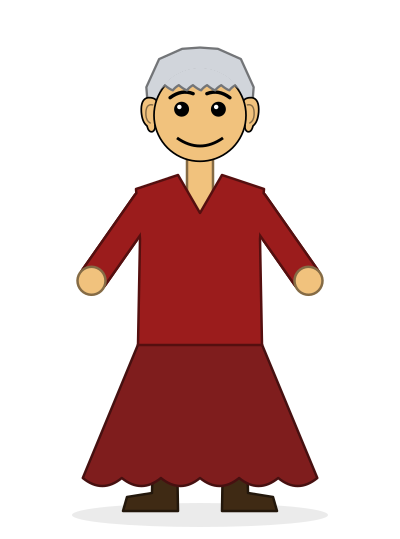
- a crown
- a beard
- a cloak with an ermine edge
- a sceptre (something held)

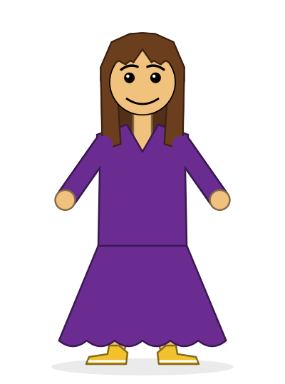
- a crown

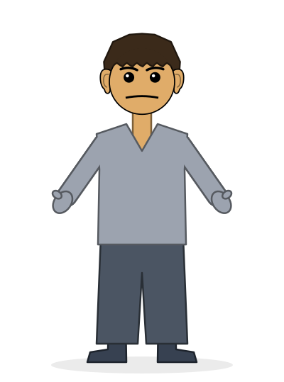
- a helmet
- armour (plates, a breastplate)
- a spear or a halberd

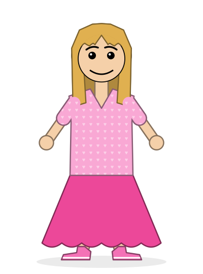
- a tiara
🏘️ The village

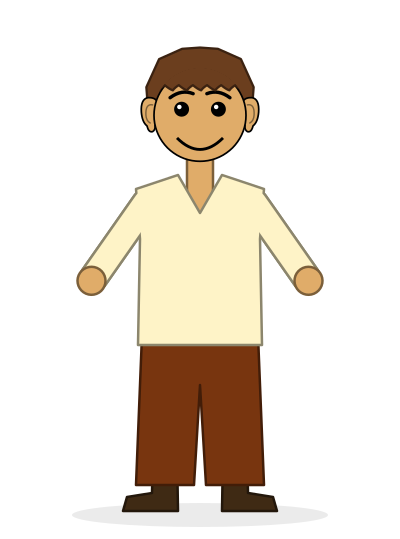
- an apron
- a counter to stand behind (a place's thing)

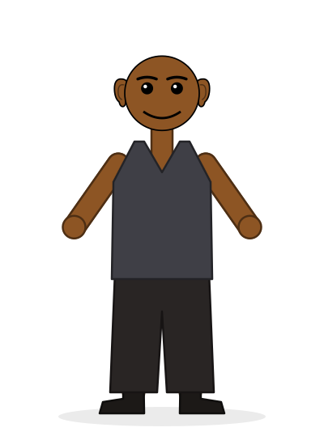
- a leather apron
- a hammer (something held)
- a beard

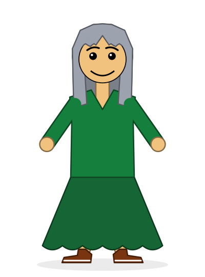
- a shawl (nice to have)

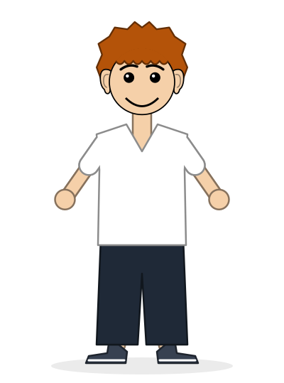
- an apron
- a mug (something held)
✨ Magic folk

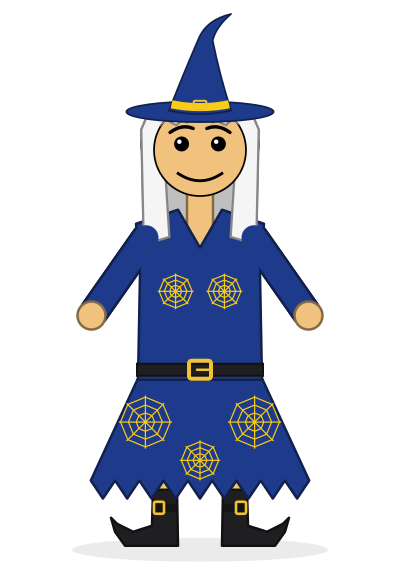
- a beard
- a staff (something held)
- stars on the robe instead of webs

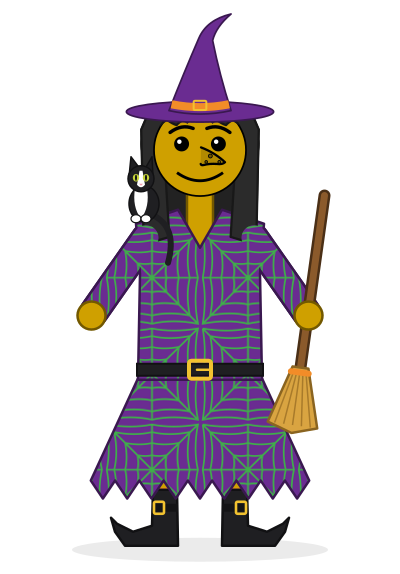
- nothing: the game has it all

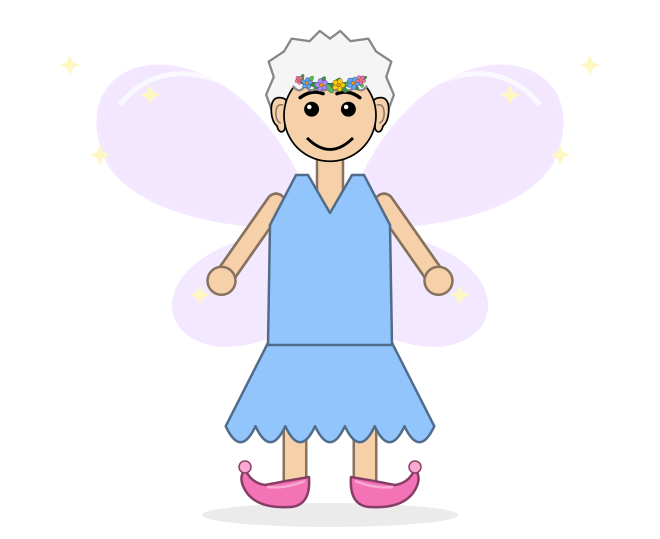
- a wand (something held)

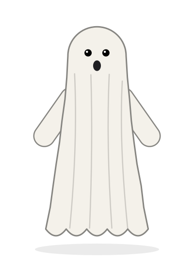
- nothing: the game has it all

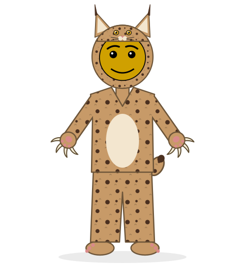
- clothes over the fur (a vest, a sash): a suit replaces the clothes today
🌲 The wilds

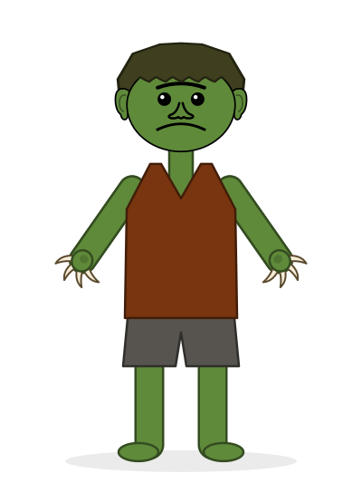
- a club (something held)
- a size of their own beside the hero (each person sized in a place)

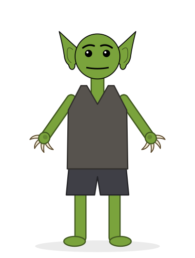
- a smaller size beside the hero

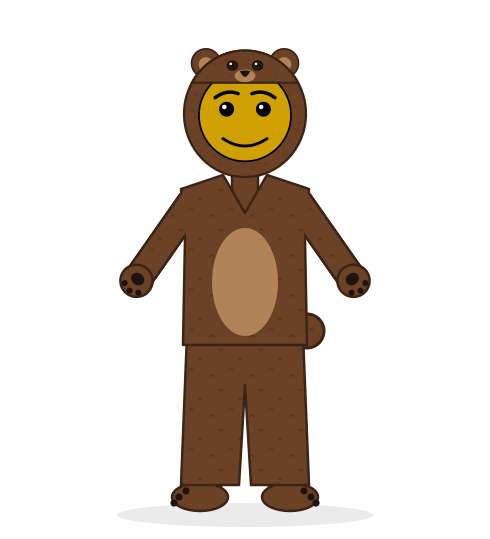
- walking on all fours (the crawl, with a bear's shape)

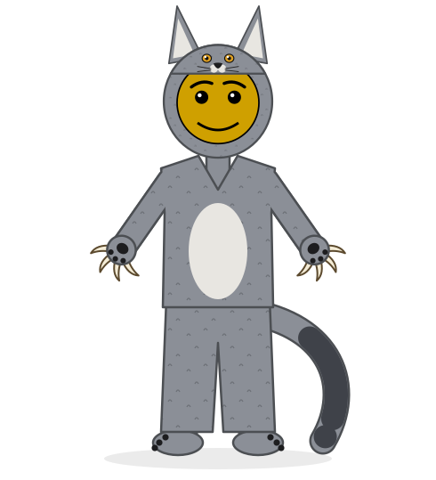
- nothing: the game has it all

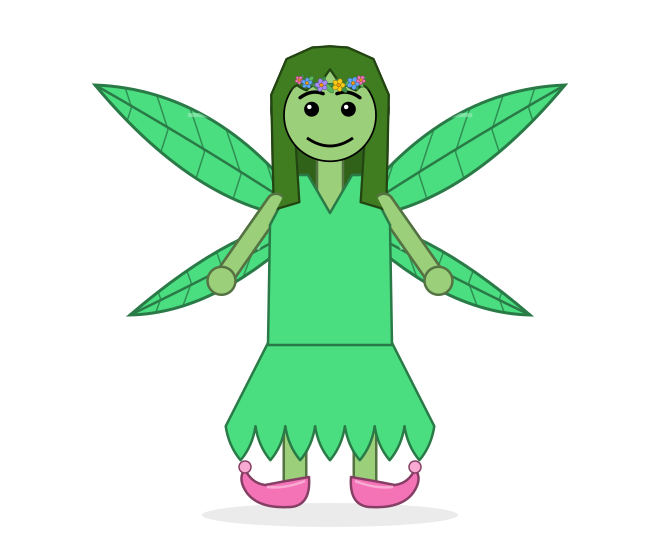
- no wings (a fairy without them)
🏴☠️ The sea and the pirates

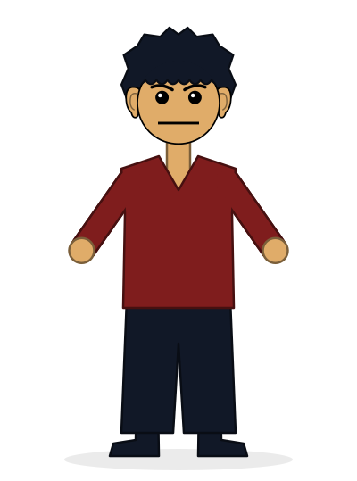
- a tricorn hat
- an eye patch
- a beard
- a peg leg (one leg drawn as wood)
- a hook for a hand
- a parrot on the shoulder (as the witch's cat)

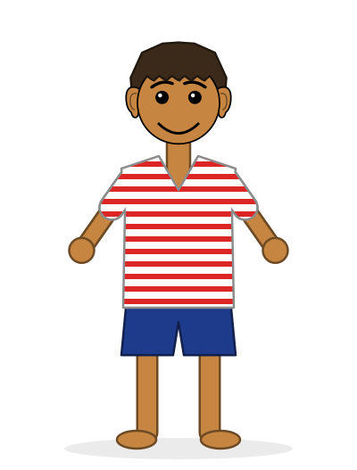
- a bandana
- an earring

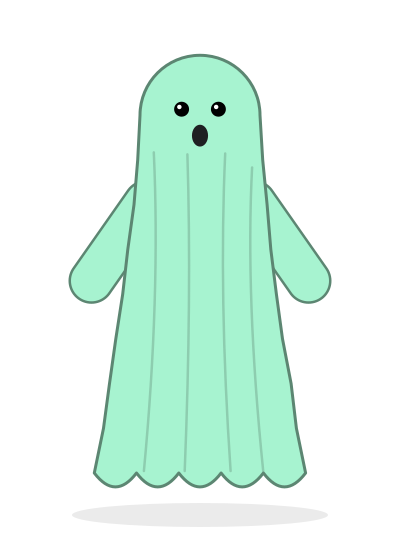
- a hat
- a beard
- the ghost's own face kept with a costume over it

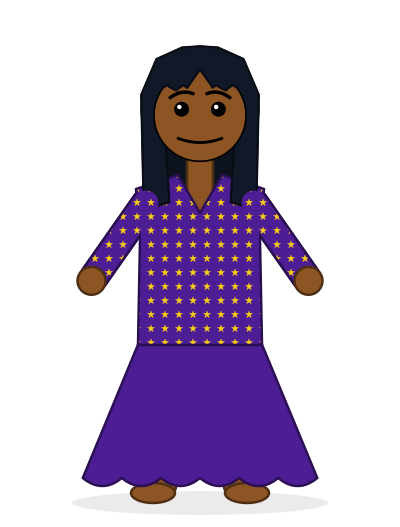
- a head wrap
- beads

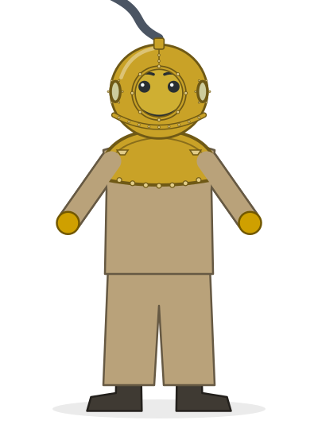
- nothing: the game has it all
🕯️ The haunted house

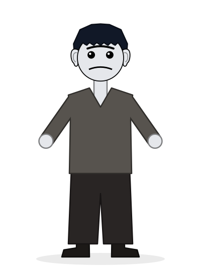
- a hunched back (a pose that bends the body)
- a lantern (something held)

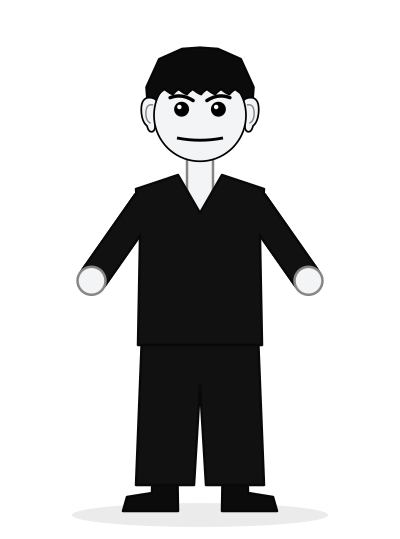
- a cape (on the back, as the tank or wings)
- a high collar

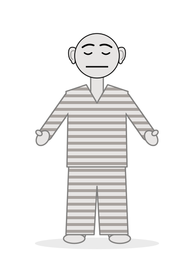
- bandages over the head (a hood, as a suit has)

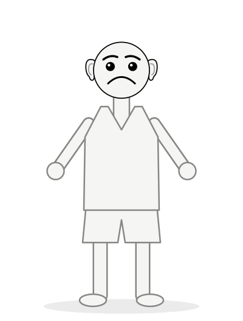
- bones: a skeleton costume (the game draws a skeleton as a place's thing, ticket 283's list, not as a friend)
What they lack, most often
| piece | people | who |
|---|---|---|
| something held (a sceptre, a staff, a hammer, a club, a wand, a mug, a lantern, a spear) | 8 | The king, A guard, The blacksmith, The innkeeper, The wizard, The fairy godmother, The troll, The servant |
| a hat or a crown (a crown, a tiara, a helmet, a tricorn, a bandana, a head wrap) | 8 | The king, The queen, A guard, The princess, The pirate captain, A pirate, The ghost pirate, The voodoo lady |
| a beard | 5 | The king, The blacksmith, The wizard, The pirate captain, The ghost pirate |
| a body changed (a peg leg, a hook, a hunched back, bones, all fours) | 4 | A bear, The pirate captain, The servant, A skeleton |
| an apron | 3 | The shopkeeper, The blacksmith, The innkeeper |
| something on the back (a cloak, a cape) | 2 | The king, The vampire |
| a size of their own beside the hero | 2 | The troll, A goblin |
| a costume worn with clothes or a face kept (a cat person's vest, the ghost's face under a hat) | 2 | A katta (a cat person), The ghost pirate |
| armour | 1 | A guard |
People in a place


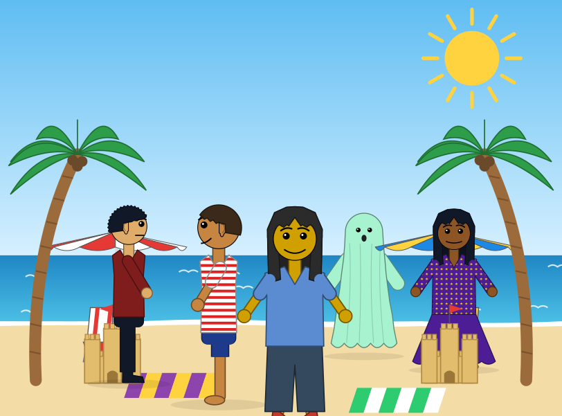
Made in the game: each person drawn by the game at their spot in the place (so at its depth and size there, and sat on a seat as the friend sits), their drawing kept, and all put into one scene at their depths. By hand, with a script; the steps below make it a thing a kid does.
- Standing. A person who stands is a still picture: drawn once at their spot, at the place's depth there, sorted among its objects as the friend is (the king's room and the beach above were made so, each person drawn by the game where they stand, then put into one scene). After the first drawing a standing person costs nothing a frame, until something about them changes; their shapes still add to what the browser paints when the picture around them changes (ticket
^ticket(340)'s question). - Walking a path. A person walking is drawn again every frame, a stride's moment at a time, as the friend is: 1.7 to 2.8 ms a drawing on the Ubuntu laptop, 6 to 10 ms on the slow tier. The black laptop's 16.7 ms a frame holds the friend and, at most, one more walking. The way round it is the friend's own: a walk is a cycle, so its moments can be drawn once (eight a stride, each way they face) and shown in turn, each a still picture put in, 0.4 to 1.4 ms, or one shown and the others hidden, near nothing.
- Talking. A speech bubble over a person's head: words in a rounded box with a tail, in the picture over the scene's (#pic-over, ticket
^ticket(340)'s), so a bubble coming and going never draws the scene again. Lines typed in the world designer, said when the friend comes near or taps them, one after another; the game has no words in its pictures yet except signs. - In the world designer. People as a place's things: a "🧑 person" among the things you put in a place, holding a whole friend's settings ("put this friend here", from the one you have made), their spot, which way they face, their pose (sitting on a seat, as the king and queen on their thrones), and, later, a path and their lines. Saved with the place, as things are.
- In the object system. A person is an object of the place: their depth for sorting, and solid boxes under their feet like the friend's soles (feetSoles), so the friend walks round them, not through them; a person on a seat uses the seat's own box (as the thrones are). Planned walks (planPath) already go round solids.
- At 60 frames a second on the black laptop. Standing people: as many as a place's things (their shapes are what counts; each is 64 to 147 shapes, as many as a big tree). Walking: one at a time drawn live, or many with their walk cycles drawn once. Talking: free, in its own picture.
A person's drawing, measured
| person | ms a drawing, walking | shapes | KB |
|---|---|---|---|
| king | 2.4 | 76 | 9.7 |
| guard | 1.8 | 78 | 10.0 |
| wizard | 2.6 | 107 | 14.9 |
| witch | 2.7 | 131 | 14.8 |
| fairy godmother | 2.8 | 147 | 19.5 |
| katta | 1.7 | 102 | 10.2 |
| troll | 1.8 | 85 | 10.9 |
| pirate captain | 1.8 | 76 | 9.6 |
| diver | 2.0 | 108 | 12.0 |
| mummy | 1.7 | 64 | 7.3 |
On the Ubuntu laptop (Intel i7), in the app's browser: the median of 24 drawings of each walking (a stride's moment each, so nothing of theirs cached); the same person put in as a still copy took 0.4 to 1.4 ms. GitHub's slow tier (the page 4 times slower, the frame-rate gate's stand-in for the black laptop): a drawing of the friend walking took 6 to 10 ms in ticket 340's runs (no bubble makers), against 1.5 to 3.5 ms at full speed.
Found on the way
- The dressing room frames each friend to fit. In the gallery the fairy godmother and the dryad look smaller: the dressing room zooms out to fit what is worn, a fairy's wings here. In a place everyone is drawn at the place's one scale (the fairy on the beach: the same scale, 0.45, as the friend without wings). So the gallery's pictures are each framed alone; the two places show people at one scale.
- The game already has one NPC, hand drawn. The healer in her hut (js/11-houses-and-huts.js: HEALER_SVG), stirring her soup and swaying with the scene's slow LFO, can be dragged about the room. She is a picture of her own, not a friend: she cannot change clothes, sit or walk. Made as a person, she could.
- A suit replaces the clothes. The animal suits (the katta here is the bobcat) draw fur over everything below the hood, so a cat person cannot also wear a vest; Quest for Glory's Kattas wear clothes.
- Surprise me never picks the witch, the fairy, the ghost or a diving suit. Surprise me picks a costume one time in four, and only an animal: never the witch, the fairy, the ghost or a diving suit (js/24-surprise-save-start-over.js:49); it does turn the gear on now and then.
- The fins have no reach. The fins are missing from FOOT_REACH (js/08-body.js:40), the list that makes room in the picture's frame for big feet.
What to build first, in small steps
- 1. A person, standing: "🧑 person" in a place's things, holding a friend's settings (copied from the friend you have made), drawn once as a still picture at its spot and depth, solid at its feet, saved with the place. The king's room, made by hand here, becomes something a kid does with taps.
- 2. Something held: a hand that holds a thing, in either hand, generalizing the witch's broom: a staff, a sceptre, a hammer, a wand, a lantern, a mug, a spear. Wanted by 8 of the 27.
- 3. A hat or a crown: a head slot over the hair, generalizing the witch's hat and the old diving helmet: a crown, a tiara, a helmet, a tricorn, a bandana, a head wrap. Wanted by 8 of the 27.
- 4. A beard: a face part under the mouth, in the hair's color or its own, short to long. Wanted by 5.
- 5. A costume as data: one record for each costume (its clothes, its head, its back, what it holds, its settings, its own drawing hooks), so a new one is a record and its drawings, not edits in five files (see the first section).
- 6. Talking: a speech bubble in the picture over the scene's, lines typed in the world designer, said when the friend comes near.
- 7. Walking a path: a person walking between two spots, their walk cycle drawn once and shown in turn, so a few can walk at once on the black laptop.
How this was put together
Written on 2026-10-18 by Claude, for Matthew, from ticket 357: Matthew: "let's do a report, in queue long-run, about making new costumes, and creating all of the NPCs for a game like Hugo, or Hero's Quest (Quest for Glory), or Kinds Quest, or Monkey Island, all with our character design system." Prompted by ticket ^ticket(288) (the diving suits and gear). The cast is in data/cast.json: each person's settings, applied in the app's browser through the game's own set() (every setting took), and the friend's picture kept as SVG (moving parts left out). The two places were made the same way, each person drawn at their spot, then put together. The costumes' inventory comes from reading the code and its history (data/costumes.json). The drawing times were measured in the app's browser on the Ubuntu laptop; the slow tier's from ticket 340's runs on GitHub. The page is built by drivers/build.py.